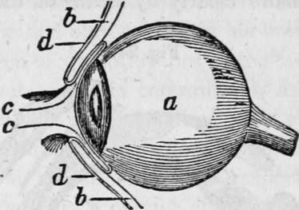
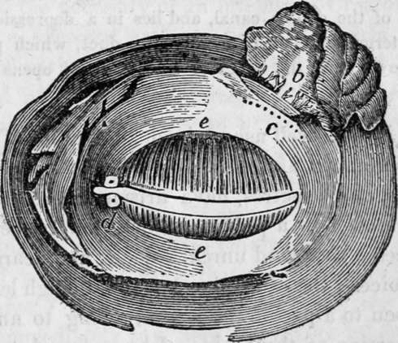
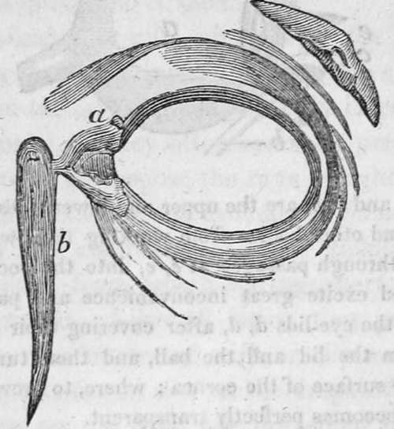

The Sense Of Sight. Part 9
Description
This section is from the book "Human Physiology For The Use Of Elementary Schools", by Charles Alfred Lee. Also available from Amazon: Human Physiology, for the Use of Elementary Schools.
The Sense Of Sight. Part 9
49. The eye lashes, or cilia, also aid in the protection of the eye. They ward off insects, protect the eye from particles floating in the air, and also break the intensity of light. Indeed, when moist, as they often are with perspiration, the little drops serve to decompose the rays of light, causing the appearance of a luminous zone around the flame of a candle. The eye brows are composed of loose cellular substance, covered with skin, from which spring short bristly hairs projecting outwards. Like all hairs, they penetrate little follicles, and become besmeared with an oily secretion, which preserves their glossiness, so that the drops of sweat which may accumulate on the brow are prevented from trickling over the eye lids, where they might interfere with vision.
50. Lachrymal Apparatus
The tears are secreted by the lachrymal gland, which is a small spongy body of a flattened form, seated in the hollow of the bone, in the upper and outer part of the orbit, just beneath the outer end of the bone. These serve as fountains, as well as laboratories or distilleries, separating, as they do, a pure water from the red blood, and discharging it by means of seven or eight little tubes, upon the inner surface of the upper eye lid, from whence it is spread along with the mucus from the conjunctiva over the eye, by the movements of the lids. But what becomes of the tears ? In the inner corner of the eye are two very minute apertures, one in each lid, which are the orifices of two canals, which communicate with a pipe, by which the superfluous moisture is drained off into the nostrils. This process is constantly going on without notice. But when there is much irritation, then the natural channels are insufficient for their escape, and the tears roll over the cheek.
a, the eye ball, and b, 6, are the upper and lower sides. Now in order to prevent dust and other bodies from working their way between the Dall and the lid, through passages at e, e, into the socket of the eye, where they would excite great inconvenience and pain, we find the common skin of the eye lids d, d, after covering their edges, turn in a little way between the lid and the ball, and then turn back and are reflected over the surface of the cornea ; where, to prevent the obstruct tion of vision, it becomes perfectly transparent.
The eye lids separated, and viewed from behind ; a, the lachrymal gland ; b, the ducts from the lachrymal gland ; c, the mouths of these ducts ; d, the puncta lachrymalia; c, the meibomian glands, which secrete the oily fluid.
51. There is a striking proof of design in the manner in which the opaque, lining membrane of the eye lids becomes transparent, as it is reflected over the cornea. But we can illustrate this more clearly by means of the following dia gram.
The eye lids viewed from before; a, a, the lachrymal canals ; b, the larchrymal sack. The lachrymal sack is a bag of an oval shape, fixed to the end of the double canal, and lies in a depression of the nasal bones. It terminates in a tube called the duct, which passes through a hole made for it, in the bones of the nose, and opens into the nostril.
52. It is now well ascertained that a belief in supernatural appearances, and stories in relation to seeing ghosts, hobgoblins, and spectres, have arisen from optical illusion. We have seen how a person in delirium tremens, imagines that he sees a thousand unreal objects, and hears a thousand strange voices ; the same phenomenon, though less in degree, may happen to a person in health, owing to an excitement in some portion of the brain.. I have heard an aged relative, who believed in witchcraft, tell of frequently having seen the ghost of some deceased friend, and once of having fired at a deer three times, in the twilight, while he was cropping the tender grain just springing out of a newlysown field, without frightening the animal; and when at length he suddenly disappeared, no tracks or traces of him could be discovered on the soft mould. Nothing could convince the old gentleman that his sight had deceived him, that these objects had only existed in his brain.
53. One source of deception lies in the fact that, indirect as well as direct vision is intermittent, as any one may learn by attempting to read small print by moonshine, or in twilight, or by looking at a single star for some time, when it will be found to vanish often and reappear. In an obscure light we find that a painful effort is required to distinguish objects ; and after all they appear and disappear, because the impression they make upon the retina is not sufficiently vivid to be continuous. We can easily imagine therefore, that in the dusk, to a person who is ignorant of this fact, the sudden disappearance and reappearance of objects must seem very extraordinary
54. Dr. Paley remarks that, " were there no example in the world of contrivance except that of the eye, it would be, alone, sufficient to support the conclusions which we draw from it, as to the necessity of an intelligent Creator." When we look at a telescope, and see how it consists of a tube composed of various pieces, containing several glasses or lenses placed at different distances in order to refract the rays of light, and bring them to a focus ; how, within it, there is a partition of metal, through which is a round hole in the centre for the purpose of lessening the surface of the lens on which the rays of light strike ; and when, in addition to all this, we see the inside painted black, to absorb the oblique and scattering rays that would otherwise render objects confused and indistinct; when we see all these things, we immediately say, here are marks of design, here is evidence of wise and skilful contrivance ! and yet the telescope is but a close imitation of the human eye, which had God for its designer. When, also, we look at the camera obscura and see a tight, dark box, with a lens fitted into it, through which the light, passing, falls upon a screen behind, forming an inverted image of the object represented, we say at once here is design ! But this instrument also is copied from the human eye 1
Questions
What is said of the sense of sight ? What are the coats of the eye ? Describe the scelerotic ?-the choroid ? What is the pig mentum nigrum ? Is it ever absent ? Describe the retina ? Illustrate the minuteness with which objects are painted on it ? Describe the cornea ? -the ciliary ligament ? What is said of these tunics in the lower order of animals ? What is the iris ? How does it contract and dilate ? Are the muscles ever under the control of the will ? What is said of the iris among the lower animals ? Describe the ciliary processes ? What are the humours of the eye ? Describe the aqueous ? the crystalline ?-the vitreous ? Explain some of the laws of vision ? What is a lens ? How many, and what kinds of lenses are there | What effect on light has a concave ? a convex ? a plain lens ? Illustrate this by the humours of the eye. Are images erect on the retina? Where do the rays cross ? How do you explain why we do not see objects inverted ? Why do we not see objects double ? Why do rivers appear shallower than they are ? To what is short sightedness owing? How may it be corrected ? What is long sightedness ? What is the remedy ? Are there persons who cannot distinguish colours ? To what is this owing ? What is said of compound eyes ? How many muscles are there to move the eye ? Describe them; the recti; the oblique. What are the defences of the eye ? Describe the orbit; the eyelids ; the muscles of the lids. Are they voluntary muscles ? How are objects carried into the angle of the eye ? What is the use of eyelashes?-of eyebrows? How are the tears secreted? How carried out of the eye ? What has led to a belief in supernatural ap? pearances ?
Continue to:
Tags
humans, anatomy, skeleton, bones, physiology, organs, nerves, brain